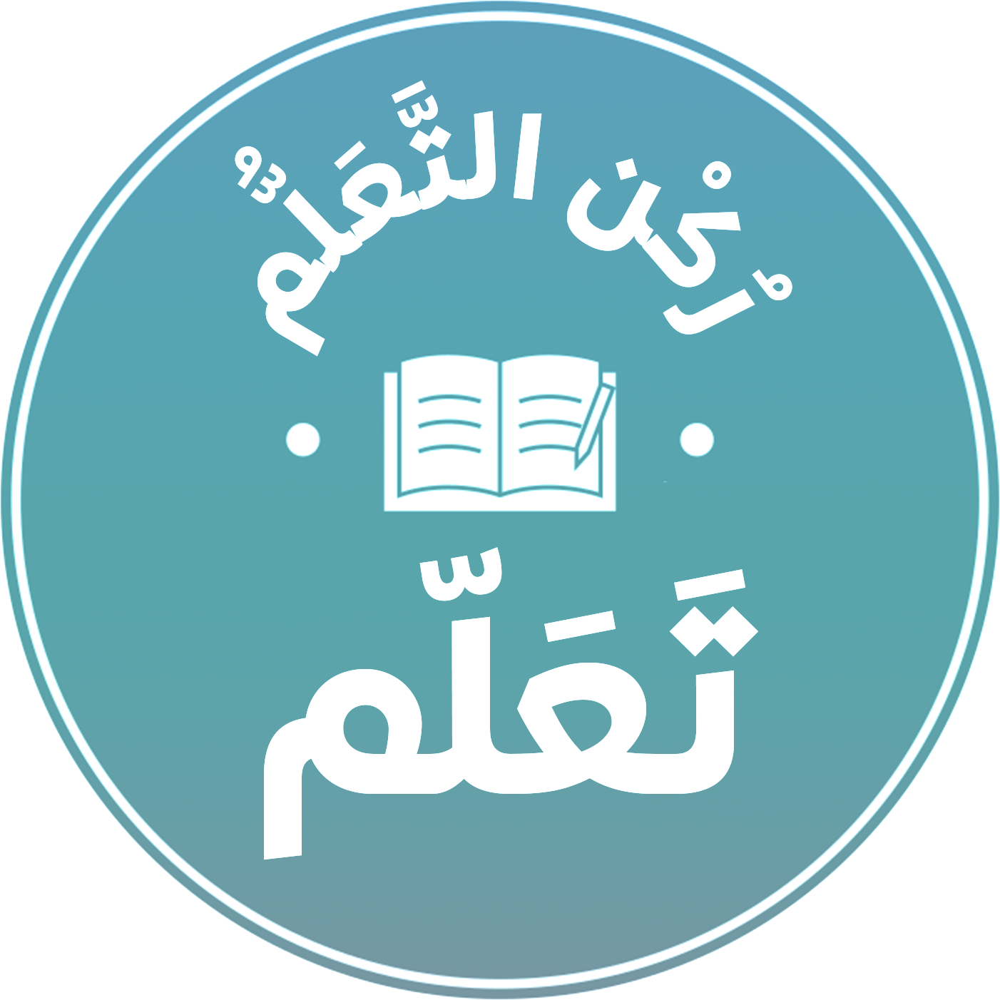

<mat-drawer-container class="dash-container " autosize>
    <mat-drawer #drawer class="dash-sidenav bg-light" position="end" mode="side" opened="true">
        <div class="py-2 px-3 flex-column">
            <div class="d-flex w-100 align-items-center py-2 mb-3 justify-content-end ">
<div class=" d-flex align-items-center justify-content-between w-100">
    <button type="button" mat-button (click)="drawer.toggle()">
        <span class="material-icons text-muted ">menu</span>
    </button>
    <div class="d-flex align-items-center">
                <span class="mr-2">تعلم </span>
                <span class="mr-3"> منصة</span>
            </div>
            </div>
                
            </div>
            <div class="d-flex align-items-center py-2 justify-content-end w-100">
                <h6 class="mr-2 mb-0">الصفحة الرئيسية</h6>
                <span class="material-icons text-muted ">home</span>
            </div>
            <div class="d-flex align-items-center py-2 justify-content-end w-100">
                <h6 class="mr-2 mb-0">الدروس </h6>
                <span class="material-icons text-muted ">book</span>
            </div>
            <div class="d-flex align-items-center py-2 justify-content-end w-100">
                <h6 class="mr-2 mb-0">جداول التوقيت </h6>
                <span class="material-icons text-muted ">calendar_month</span>
            </div>


        </div>

    </mat-drawer>

    <div class="dash-sidenav-content">
        <button type="button" mat-button (click)="drawer.toggle()">
            Toggle sidenav
        </button>
    </div>

</mat-drawer-container>